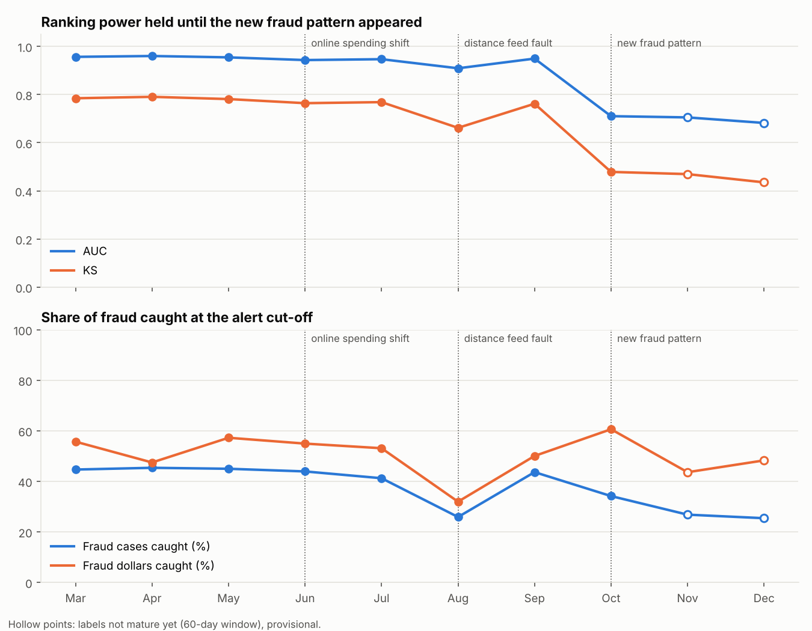
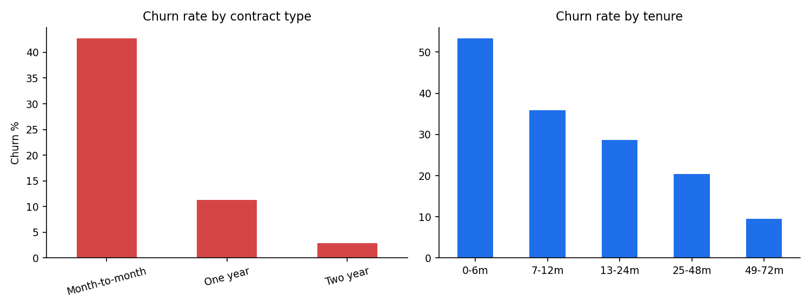
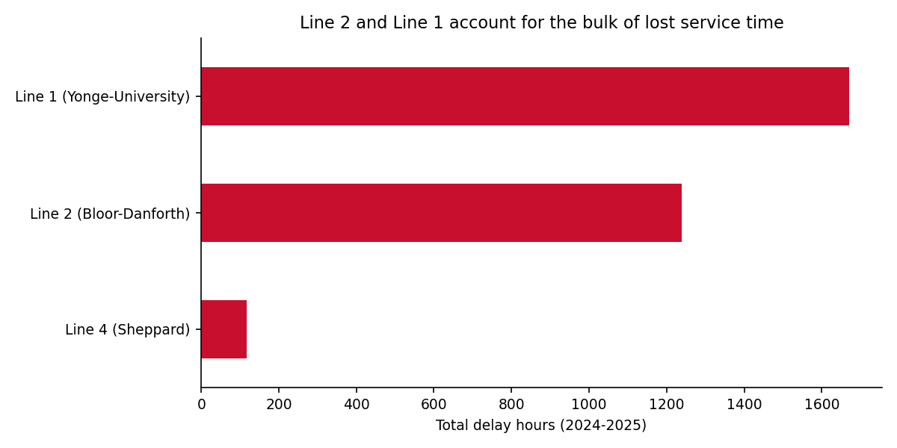

I build models, and the checks that tell you whether to trust them, in SQL, Python and Power BI. MSc in Management Analytics from Wilfrid Laurier University (2026), with recent consulting work forecasting housing supply for BC Housing. Based in Toronto and looking for data analyst and data science roles.
End-to-end analyses with reproducible code, findings and a business recommendation.
36-month forecasts of housing completions for every BC regional district, built on 36+ years of CMHC data merged with economic indicators. Pooled Ridge model with leakage-free feature engineering, calibrated 50/80/95% prediction intervals, ±100bp mortgage-rate scenarios, and a Power BI dashboard presented to agency staff and programme leads. Consulting engagement through Wilfrid Laurier University, January to August 2026; my part was the data preparation, the forecasting models and the Power BI build.
A year of simulated card transactions with three planted events, and the monthly report that has to catch them. A gradient-boosted fraud model is checked every month for ranking power (AUC, KS), score and input shift (PSI, CSI), alert volume, and fraud cases and dollars caught, with fraud labels arriving two months late. The report told a broken data feed apart from a real change in fraud: the feed fault showed up as a 0.78 input shift, while the new fraud pattern moved no input at all and only appeared in outcomes once labels matured.

Logistic regression on 7,032 telco customers (test AUC 0.837), chosen for interpretability so every coefficient maps to an action. Found $445K of annualized revenue in high-risk accounts and a top-decile targeting lift of 2.5×, translated into a 3-point retention playbook.

Normalized a flat retail file into a 4-table schema, then answered business questions in 7 queries: YoY growth, discount-driven losses (Tables lose $17.7K at 26% avg discount), 12-month cohort retention, and RFM segmentation that found 82 high-value at-risk customers.
64,485 real delay records (2024 to 2025) cleaned, joined to the TTC's cause-code table, and quantified: 126 days of lost service time, peaks at 8 AM and between 4 and 5 PM, and top causes that are people-related, not mechanical, pointing investment toward platform safety and station staffing.

Three-sheet workbook with 6 live KPI cards and 4 native Excel charts: monthly revenue trend, category profitability, segment mix and regional sales. Every number is a live formula referencing the data sheet, delivered with zero formula errors and finance-standard formatting.
Graduate coursework and research projects, with full code in the repos.
Weekly sales prediction across 45 stores using the Walmart dataset: feature engineering (holidays, rolling statistics, markdowns), an XGBoost baseline with a custom holiday-weighted loss, a tuned LSTM (TensorFlow/Keras), and SHAP-based interpretation to explain store-level demand drivers.
Field project for BC Housing on which measure, housing starts or new home registrations, better predicts completions. Quantified conversion rates and time lags from registration to start to completion, and how housing activity by construction type moves with economic drivers, across 36 years of CMHC data.
Simulation framework for vehicular ad hoc network (VANET) research, linking SUMO traffic simulation with NS-3 network simulation, with systematic validation checks added to the data collection pipeline.
Web application for testing equity trading strategies against historical prices: users define their own entry and exit rules and get back risk-adjusted results, including the Sharpe ratio and maximum drawdown.
The toolkit behind the projects above.
SQL (joins, CTEs, window functions, subqueries), SQLite and MySQL, data modelling and normalization, Python (pandas, NumPy), R
Classification and regression (logistic, Ridge, gradient boosting), time-series forecasting (ARIMAX, XGBoost, LSTM), statistical inference, missing-data imputation, out-of-time validation, prediction intervals
AUC, Gini and KS; PSI and CSI drift checks; alert, detection and false-alarm rates; validation and quality-control checks; root-cause investigation; unit testing with pytest
Power BI (DAX, data modelling), Tableau, Matplotlib, Excel dashboards; presenting models and dashboards to non-technical audiences; Git and GitHub; Agile sprints